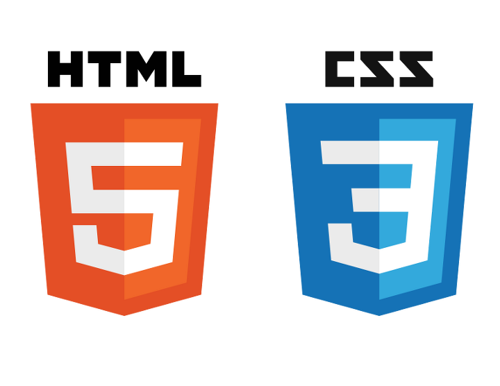

board
JSP dev. log
java
MySQL
html&CSS
CodeUp
source code
link
instagram
editor
board
JSP dev. log
java
MySQL
html&CSS
CodeUp
source code
link
instagram
editor
F
u
n
a
n
d
C
o
d
i
n
g
JSP deveropment log
java
MySQL
html&CSS
Code UP
Source code
◀
be bright
Don't dream it, be it and fun
JSP dev. log 최신 게시물
21-02-07
💻JSP 개발일지(5):: 서버등록, 게시물 좋아요 싫어요, 댓글 등 기능 구현
21-01-30
💻JSP 개발일지(4):: attr 추가 및 각종 경고문구 등 추가
21-01-29
💻JSP 개발일지(3):: 토스트에디터 추가 및 회원정보 수정 기능 구현
21-01-28
💻JSP 개발일지(2):: 기본동작 구현 및 확인
java 최신 게시물
21-01-27
Google Analytics API 사용 (조회수 적용 및 오류 수정)
20-12-20
자바: 아스키코드, 유니코드를 문자나 숫자로 변환하기
20-12-20
Java - split, substring으로 문자열을 자르기 & 분리하기
20-12-20
예외처리 try catch
MySQL 최신 게시물
21-01-30
[MySQL] INSERT UNIQUE중복 체크 ON DUPLICATE KEY UPDATE
20-12-21
SQL 소수점 반올림, 버림, 내림
${index__summary-regDate-MySQL2}
${index__summary-body-title-MySQL2}
${index__summary-regDate-MySQL3}
${index__summary-body-title-MySQL3}
html&CSS 최신 게시물
21-01-20

[html, css] ::selection 마우스 드래그 배경색 변경
20-12-23
css 박스 안 넘치는 글 자르기
20-12-23
파비콘 설명 적용 방법👌
20-12-21
마크다운(MarkDown)사용법 용어👍
CodeUp 최신 게시물
21-01-20
java(자바)codeup(코드업)[1088 : [기초-종합] 3의 배수는 통과?(설명)]
21-01-20
java(자바)codeup(코드업)1087 : [기초-종합] 여기까지! 이제 그만~
21-01-20
java(자바):codeup(코드업)[1083 : [기초-종합] 3 6 9 게임의 왕이 되자!
21-01-20
java(자바)codeup(코드업)1080 : [기초-종합] 언제까지 더해야 할까?
source code 최신 게시물
20-12-21
마우스 hover 효과 10가지
20-12-20
CSS: CSS 스크롤 화살표 표기
20-12-20
스크롤 화살표, 회전 배너효과
${index__summary-regDate-source3}
${index__summary-body-title-source3}